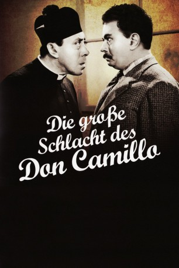

#935 Don Camillo und Peppone 3 - Die grosse Schlacht des Don Camillo
 
 IMDB-Wertung: 7.2 / 10
IMDB-Wertung: 7.2 / 10  Metascore: 0
Metascore: 0 
Weiterer Teil der Don-Camillo-Reihe mit Fernandel und Gino Cervi. Don Camillo und Peppone sind wieder in Streitlaune. Dieses Mal geht es um die anstehenden Parlamentswahlen. Peppone soll als Abgeordneter nach Rom gehen. Das will Don Camillo natürlich um jeden Preis verhindern. Dafür sind ihm fast alle Mittel recht. Von 1955.
Jahr: 1955
Dauer: 98 Minuten
FSK: 12
Land: Italien Studio: Allianz FilmverleihTonspuren:
Untertitel: Deutsch,
Auflösung: 1080p (1440x1080) Größe: 8140 MB
Genre: Komödie
Regisseur: Carmine Gallone
Drehbuch: René Barjavel, Leonardo Benvenuti, Giovanni Guareschi, Giovanni Guareschi, Agenore Incrocci
Soundtrack: Alessandro Cicognini
Darsteller:
 Fernandel als Don Camillo
Fernandel als Don Camillo Gino Cervi als Giuseppe 'Peppone' Bottazzi
Gino Cervi als Giuseppe 'Peppone' Bottazzi Saro Urzì als Brusco, il parucchiere / Brusco, le coiffeur
Saro Urzì als Brusco, il parucchiere / Brusco, le coiffeur- Lamberto Maggiorani als
- Claude Sylvain als Clotilde
- Leda Gloria als La signora Bottazzi, moglie di Peppone / Madame Botazzi, la femme de Peppone
- Umberto Spadaro als Bezzi
- Memmo Carotenuto als Lo Spiccio
- Guido Celano als Il maresciallo
- Luigi Tosi als Judge
- Marco Tulli als Lo Smilzo
- Giuseppe Vinaver als
- Manuel Gary als
- Giovanni Onorato als Il Lungo
- Renzo Giovampietro als
- Carlo Duse als Bigio
- Gustavo De Nardo als
- Gaston Rey als Bollini
- Spartaco Pellicciari als
- Stefano Alberici als Il figlio di Peppone
- Vincent Barbi als (uncredited
- Enrico Canestrini als (uncredited
- Emilio Cigoli als Voce narrante , uncredited
- Renzo Ricci als La voce del crocifisso , uncredited
- Mario Siletti als (uncredited
- Giuseppe Varni als (uncredited
Datei: X:\5-Pentalogie(A-Z)\Don Camillo und Peppone\Don Camillo und Peppone 3 - Die grosse Schlacht des Don Camillo (1955, FSK12, 1440x1080).mkv seit 22.04.2015
Festplatte: HD Collection-3(N-Z)-6(A-Z)
 Es gibt insgesamt 8 Filme in der Gruppe '5-Pentalogie(A-Z)\Don Camillo und Peppone'
Es gibt insgesamt 8 Filme in der Gruppe '5-Pentalogie(A-Z)\Don Camillo und Peppone'